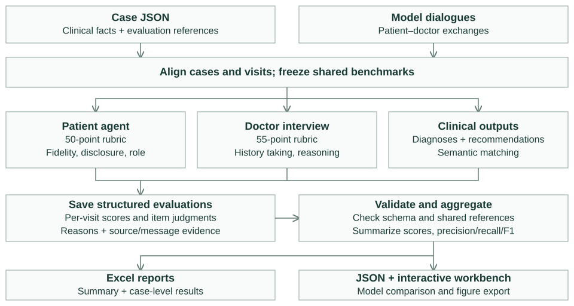

From evaluation results to comparisons
Compare prenatal-diagnosis agents across evaluation metrics, explore structured results, and export customizable figures and data.
The current version includes a broad set of metrics. The set will be refined during further use, and the most appropriate quantitative measures will be selected for practical applications and the paper.
Uses illustrative data for three agents. The evaluation pipeline is separate; this page displays existing results and does not run scoring.
Explore Figure StudioEvaluation workflow
From case-aligned inputs to evidence-linked scores, validated metrics, and reports.

Full metric comparison
Metrics are rows and agents are columns. Hover over a value for counts, confidence intervals, and reasons for NA.
Higher is better (up arrow); lower is better (down arrow). Best values are highlighted only when at least two available values differ.
Figure Studio
Select metrics, agents, and a chart; adjust its style; export SVG, PNG, CSV, or a chart configuration.
Metric reference and interpretation
The workbench displays existing results. It does not perform medical evaluation or generate missing statistics.